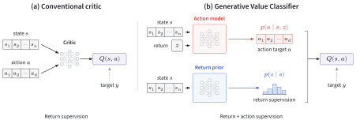
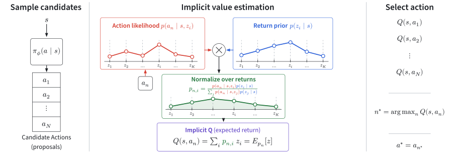
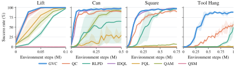
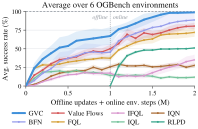
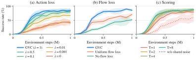
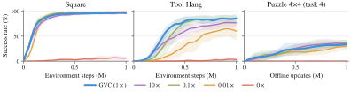
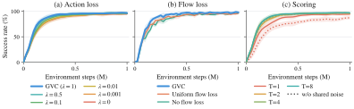
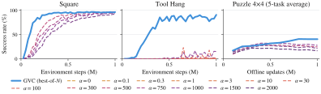
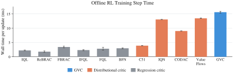

On six OGBench tasks, we train offline for 1M updates and then finetune online for 1M environment steps. GVC has the highest average success at the end of both phases: it rises from 67.1% to 98.9%, about 19 points above Value Flows and 26 above FQL, and finishes within 95% of the best method on all six tasks. BFN finishes second at 88.7% but scores 45.4% after offline training, and two of its eight seeds collapse on puzzle-4x4. RLPD, which learns only online, reaches 99–100% on three tasks but stays near zero on the other three.
Abstract
Q-learning is premised on learning a function to predict the value of a state-action pair, with the goal of using such a function to guide policy improvement. Most approaches learn this function from scratch using scalar or distributional return targets. This discriminative approach leaves another source of supervision for learning representations unused: the actions themselves. Rather than directly predict the return of a state-action pair, we ask the reverse question: how likely is the action under each possible return? This perspective provides a critic whose generative component is a return-conditioned policy, which can share the actor’s architecture. Training this policy supervises the critic with every action rather than with returns alone, and a squared-error loss anchors the critic’s Q-value to the bootstrapped target. We evaluate our approach on both offline and online RL tasks and show gains over leading discriminative methods, including distributional RL methods.
Method
A distributional critic predicts the return distribution \(p(z\mid s,a)\) over a fixed set of return bins \(z_1,\dots,z_K\). The Generative Value Classifier (GVC) recovers it from the likelihood of the action under each bin, with Bayes’ rule:
\[
p(z_i\mid s,a)=\frac{p_\theta(a\mid s,z_i)\,p_\psi(z_i\mid s)}{\sum_j p_\theta(a\mid s,z_j)\,p_\psi(z_j\mid s)},
\qquad
Q(s,a)=\sum_i p(z_i\mid s,a)\,z_i.
\]

Action data provides additional supervision. A conventional critic fits \(Q(s,a)\) to a scalar target \(y\). GVC instead learns a return-conditioned action model \(p(a\mid s,z)\) and a return prior \(p(z\mid s)\), i.e., a distributional state-value function, and normalizes their product over returns to obtain \(Q(s,a)\).
The critic has two parts. The action model \(p_\theta(a\mid s,z)\) is a flow-matching policy conditioned on a return bin, and it can share the actor’s architecture. The return prior \(p_\psi(z\mid s)\) predicts the return distribution from the state alone. Flows do not give exact likelihoods, so we use the conditional flow-matching error of \(a\) under each bin as a surrogate for \(-\log p_\theta(a\mid s,z_i)\) and put tuned exponents on the two factors. A shared trunk encodes the state, the noised action, and the flow time, and each bin adds a learned embedding before a shared head, so one forward pass scores all \(K\) bins.

GVC at inference time. The actor proposes candidate actions (left). For each action, we compute the return-conditioned action likelihood, along with the return prior. Normalizing their product over return bins (center) provides a return distribution whose mean gives \(Q(s,a)\), which we use to rank the action candidates (right).
Training. Both parts of the critic learn from the same TD target. Let \(\widehat p\) be the distribution of \(r+\gamma Z'\) projected onto the return bins, where \(Z'\) is the target critic’s return distribution at the next state and action. The flow-matching loss on the dataset action is weighted across bins by \(\widehat p\), and the return prior is fit to \(\widehat p\) with a cross-entropy loss:
\[
\begin{aligned}
\mathcal L_{\mathrm{flow}}&=-\sum_i\widehat p_i\log p_\theta(a\mid s,z_i),\\
\mathcal L_{\mathrm{return}}&=-\sum_i\widehat p_i\log p_\psi(z_i\mid s).
\end{aligned}
\]
Because the flow error is only a surrogate, with unknown scale and bin-dependent offsets, these two losses do not ensure that \(Q(s,a)\) matches the target mean \(y=\sum_i\widehat p_i z_i\). A squared-error value anchor, \(\mathcal L_{\mathrm{anchor}}=\big(Q(s,a)-y\big)^2\), penalizes this error directly. The full objective is \(\mathcal L=\mathcal L_{\mathrm{actor}}+\lambda_F\mathcal L_{\mathrm{flow}}+\lambda_R\mathcal L_{\mathrm{return}}+\lambda_V\mathcal L_{\mathrm{anchor}}\).
Acting. The actor is a separate flow policy trained by behavior cloning on dataset or replay actions. At each step it proposes \(N\) candidate actions, GVC scores them, and we execute the one with the highest \(Q(s,a)\). The next action \(a'\) in the TD target is chosen the same way.
Online RL on RoboMimic
We follow the training recipe of QC on four RoboMimic manipulation tasks with sparse task-completion rewards and change only the critic. Lift, Can, and Square are eventually solved by GVC, QC, and IDQL, with small sample-efficiency gains for GVC. Tool Hang, a long-horizon task in which the robot inserts a hook into a base and then hangs a wrench from it, is where the critics diverge: GVC reaches about 85% success within 0.5M steps, whereas QC and RLPD only reach about 50% at 1M steps.

Success rate versus environment steps. Shaded regions show one standard deviation across seeds.
Offline RL on OGBench
We evaluate on 35 tasks across seven OGBench domains, with 8 seeds per task. The closest comparison is BFN (from QC), which uses the same flow actor and best-of-\(N\) selection as GVC but a regression critic. On the two largest puzzles, GVC reaches 92% and 48% on the first task of puzzle-4x5 and puzzle-4x6, against 83% and 22% for BFN. It leads BFN by 12 points on the sparse scene tasks, mostly on task5 (97% vs. 45%), and the two are nearly tied on cube-double (65% vs. 66%). Compared with Value Flows, the strongest distributional baseline, GVC is ahead on puzzle-4x4, puzzle-4x5, and puzzle-4x6 by 8 points on average and behind on cube-double and cube-triple by 4.
| Gaussian Policies | Flow Policies | |||||||||||
|---|---|---|---|---|---|---|---|---|---|---|---|---|
| Environment | BC | IQL | ReBRAC | FBRAC | IFQL | FQL | C51 | IQN | CODAC | Value Flows | BFN | GVC |
| scene-sparse | 5 | 0 | 15 | 86 | 72 | 53 | 6 | 86 | 82 | 94 | 86 | 98 |
| puzzle3x3-sparse | 2 | 0 | 62 | 43 | 98 | 99 | 2 | 19 | 2 | 21 | 97 | 98 |
| puzzle4x4 | 0 | 7 | 14 | 13 | 25 | 17 | 0 | 27 | 20 | 27 | 32 | 41 |
| puzzle4x5 | 0 | 3 | 0 | 6 | 17 | 11 | 0 | 18 | 10 | 13 | 17 | 18 |
| puzzle4x6 | 0 | 0 | 2 | 3 | 0 | 4 | 0 | 6 | 2 | 4 | 5 | 10 |
| cube-double | 2 | 6 | 12 | 15 | 14 | 29 | 2 | 42 | 61 | 69 | 66 | 65 |
| cube-triple | 0 | 1 | 0 | 0 | 0 | 4 | 0 | 6 | 2 | 14 | 6 | 10 |
Success rate (%) averaged over the five tasks of each domain. Bold: within 95% of the best result.
Show results for all 35 tasksHide per-task results
| Gaussian Policies | Flow Policies | ||||||||||||
|---|---|---|---|---|---|---|---|---|---|---|---|---|---|
| Environment | Task | BC | IQL | ReBRAC | FBRAC | IFQL | FQL | C51 | IQN | CODAC | Value Flows | BFN | GVC |
| scene-sparse | task1 | 19±6 | 0±0 | 9±8 | 100±1 | 96±3 | 65±16 | 19±6 | 99±2 | 100±1 | 100±1 | 100±1 | 99±1 |
| task2 | 1±1 | 0±0 | 66±19 | 86±10 | 83±5 | 52±12 | 2±2 | 98±2 | 98±3 | 99±1 | 100±1 | 99±2 | |
| task3 | 1±1 | 0±0 | 0±0 | 94±8 | 56±8 | 60±2 | 2±2 | 93±6 | 72±38 | 89±5 | 94±6 | 99±2 | |
| task4 | 2±2 | 0±0 | 0±0 | 77±34 | 72±12 | 69±16 | 4±4 | 82±15 | 76±30 | 92±10 | 90±4 | 98±3 | |
| task5 | 0±0 | 0±0 | 0±0 | 75±19 | 52±8 | 19±5 | 1±2 | 57±30 | 66±20 | 91±7 | 45±14 | 97±3 | |
| avg. | 5 | 0 | 15 | 86 | 72 | 53 | 6 | 86 | 82 | 94 | 86 | 98 | |
| puzzle3x3-sparse | task1 | 5±2 | 1±1 | 98±2 | 75±19 | 99±1 | 100±0 | 6±3 | 37±29 | 5±4 | 78±15 | 99±1 | 100±0 |
| task2 | 1±1 | 0±0 | 66±15 | 35±37 | 99±2 | 100±0 | 3±3 | 13±18 | 1±1 | 5±7 | 97±5 | 100±0 | |
| task3 | 1±1 | 0±0 | 25±16 | 21±22 | 98±2 | 97±4 | 0±1 | 41±48 | 1±1 | 10±5 | 95±5 | 97±4 | |
| task4 | 1±1 | 0±0 | 55±13 | 41±34 | 98±2 | 98±2 | 0±1 | 2±2 | 1±2 | 8±6 | 98±3 | 98±1 | |
| task5 | 1±0 | 0±0 | 68±18 | 43±40 | 97±4 | 100±0 | 1±1 | 1±2 | 0±1 | 4±4 | 96±2 | 96±4 | |
| avg. | 2 | 0 | 62 | 43 | 98 | 99 | 2 | 19 | 2 | 21 | 97 | 98 | |
| puzzle4x4 | task1 | 1±1 | 12±2 | 26±4 | 32±9 | 49±9 | 34±8 | 0±0 | 41±2 | 37±32 | 36±3 | 62±10 | 76±4 |
| task2 | 0±0 | 7±4 | 12±4 | 5±3 | 4±4 | 16±5 | 0±0 | 12±4 | 10±10 | 27±5 | 20±7 | 19±12 | |
| task3 | 0±0 | 9±3 | 15±3 | 20±10 | 50±14 | 18±5 | 0±0 | 45±7 | 33±29 | 30±4 | 41±8 | 63±12 | |
| task4 | 0±0 | 5±2 | 10±3 | 5±1 | 21±11 | 11±3 | 0±0 | 23±2 | 12±10 | 28±5 | 21±6 | 28±11 | |
| task5 | 0±0 | 4±1 | 7±3 | 2±2 | 2±2 | 7±3 | 0±0 | 16±6 | 10±8 | 13±2 | 14±6 | 19±9 | |
| avg. | 0 | 7 | 14 | 13 | 25 | 17 | 0 | 27 | 20 | 27 | 32 | 41 | |
| puzzle4x5 | task1 | 0±0 | 14±7 | 0±1 | 32±30 | 86±8 | 53±19 | 0±0 | 90±5 | 51±10 | 67±4 | 83±4 | 92±4 |
| task2 | 0±0 | 0±0 | 0±0 | 0±0 | 0±0 | 0±0 | 0±0 | 0±1 | 1±2 | 0±1 | 1±1 | 0±0 | |
| task3 | 0±0 | 0±0 | 0±0 | 0±0 | 0±0 | 0±0 | 0±0 | 0±0 | 0±1 | 0±1 | 0±0 | 0±0 | |
| task4 | 0±0 | 0±0 | 0±0 | 0±0 | 0±0 | 0±0 | 0±0 | 0±0 | 0±0 | 0±0 | 0 | 0±0 | |
| task5 | 0±0 | 0±0 | 0±0 | 0±0 | 0±0 | 0±0 | 0±0 | 0±0 | 0±0 | 0±0 | 0±0 | 0±0 | |
| avg. | 0 | 3 | 0 | 6 | 17 | 11 | 0 | 18 | 10 | 13 | 17 | 18 | |
| puzzle4x6 | task1 | 0±0 | 2±3 | 8±7 | 16±20 | 0±0 | 22±5 | 0±0 | 30±14 | 10±11 | 22±25 | 22±8 | 48±16 |
| task2 | 0±0 | 0±1 | 0±1 | 0±1 | 0±0 | 0±1 | 0±0 | 0±1 | 2±2 | 0±1 | 1±1 | 0±0 | |
| task3 | 0±0 | 0±0 | 0±0 | 0±0 | 0±0 | 0±0 | 0±0 | 0±0 | 0±0 | 0±0 | 0±0 | 0±0 | |
| task4 | 0±0 | 0±0 | 0±0 | 0±0 | 0±0 | 0±0 | 0±0 | 0±0 | 0±0 | 0±0 | 0±0 | 0±0 | |
| task5 | 0±0 | 0±0 | 0±0 | 0±0 | 0±0 | 0±0 | 0±0 | 0±0 | 0±0 | 0±0 | 0 | 0±0 | |
| avg. | 0 | 0 | 2 | 3 | 0 | 4 | 0 | 6 | 2 | 4 | 5 | 10 | |
| cube-double | task1 | 8±3 | 27±5 | 45±6 | 47±11 | 35±9 | 61±9 | 9±0 | 70±14 | 80±11 | 97±1 | 73±4 | 88±21 |
| task2 | 0±0 | 1±1 | 7±3 | 22±12 | 9±5 | 36±6 | 0±0 | 24±9 | 63±4 | 76±7 | 78±4 | 71±12 | |
| task3 | 0±0 | 0±0 | 4±1 | 4±2 | 8±5 | 22±5 | 0±0 | 25±6 | 66±9 | 73±4 | 77±7 | 74±26 | |
| task4 | 0±0 | 0±0 | 1±1 | 0±1 | 1±1 | 5±2 | 0±0 | 10±1 | 13±2 | 30±5 | 23±6 | 19±6 | |
| task5 | 0±0 | 4±3 | 4±2 | 2±2 | 17±6 | 19±10 | 0±0 | 81±8 | 82±4 | 69±5 | 79±6 | 75±19 | |
| avg. | 2 | 6 | 12 | 15 | 14 | 29 | 2 | 42 | 61 | 69 | 66 | 65 | |
| cube-triple | task1 | 1±1 | 4±4 | 1±2 | 0±0 | 2±2 | 20±6 | 1±0 | 29±2 | 9±5 | 59±12 | 28±13 | 49±30 |
| task2 | 0±0 | 0±0 | 0±0 | 0±0 | 0±0 | 1±2 | 0±0 | 0±0 | 1±0 | 0±0 | 1±1 | 1±1 | |
| task3 | 0±0 | 0±0 | 0±0 | 0±0 | 0±0 | 0±0 | 0±0 | 1±0 | 0±0 | 7±3 | 2±0 | 2±3 | |
| task4 | 0±0 | 0±0 | 0±0 | 0±0 | 0±0 | 0±0 | 0±0 | 0±0 | 0±0 | 0±0 | 0±0 | 0±0 | |
| task5 | 0±0 | 1±1 | 0±0 | 0±0 | 0±0 | 0±0 | 0±0 | 0±0 | 0±0 | 2±1 | 0±0 | 0±0 | |
| avg. | 0 | 1 | 0 | 0 | 0 | 4 | 0 | 6 | 2 | 14 | 6 | 10 | |
Success rate (%), mean ± standard deviation over 8 seeds. Bold: within 95% of the best result for each task.
Offline-to-Online RL

| Task | IQN | IFQL | FQL | RLPD | IQL | Value Flows | BFN | GVC |
|---|---|---|---|---|---|---|---|---|
| antmaze-large | 55±5→91±1 | 11±3→3±2 | 87±7→100±1 | 0±0→99±2 | 41±5→45±5 | 72±4→96±1 | 66±19→99±1 | 77±9→97±2 |
| humanoidmaze-medium | 23±3→14±2 | 56±12→82±7 | 12±7→22±12 | 0±0→8±3 | 21±5→16±3 | 29±6→86±3 | 32±8→89±4 | 94±2→99±1 |
| cube-double | 29±4→42±7 | 12±3→41±2 | 40±11→92±3 | 0±0→0±0 | 0±0→0±0 | 65±7→79±6 | 79±7→90±7 | 64±21→98±1 |
| cube-triple | 25±5→14±6 | 2±1→7±5 | 4±1→83±12 | 0±0→0±0 | 3±1→0±0 | 29±8→70±7 | 21±10→90±17 | 46±21→100±0 |
| puzzle-4x4 | 22±2→6±1 | 23±2→19±12 | 8±3→38±52 | 0±0→100±0 | 5±1→0±0 | 14±3→51±12 | 24±6→68±39 | 25±8→100±1 |
| scene | 0±0→0±0 | 0±0→60±14 | 82±11→100±1 | 0±0→100±0 | 15±4→10±3 | 92±23→100±0 | 51±16→97±4 | 96±9→100±0 |
Success rate (%) after offline training → after online finetuning, mean ± standard deviation over 8 seeds. Bold: within 95% of the best final result.
Ablations
We ablate the generative loss, which is what distinguishes GVC from a discriminative critic, and the noise sampling used to score actions. All runs are on Tool Hang with 8 seeds per variant.

- (a) Action loss. Success decreases as we reduce the weight \(\lambda_F\) on the flow loss, from about 85% at \(\lambda_F=1\) to 80% at 0.1, 65% at 0.01, and 45% at 0.001 or with the loss removed.
- (b) Flow loss. Weighting all return bins uniformly, so that the flow loss still trains the action model but no longer links actions to returns, recovers about 70%. Roughly half of the benefit comes from the generative supervision itself and the rest from conditioning it on the return.
- (c) Scoring. With noise shared across candidate actions, a single noise timestep (\(T=1\)) reaches about 80%, and \(T\geq2\) adds a few points. Without sharing, \(T=1\) falls to about 60%.
Value anchor. The anchor is required: without it, success stays below 10% on Square, Tool Hang, and puzzle-4x4. Square is insensitive to its weight \(\lambda_V\). In this sweep on Tool Hang, 0.1× the default ends close to 1× (88% vs. 86%), while 10× ends at 77% and 0.01× at 57%.

More ablations: Square, and a distilled actorHide additional ablations
Ablations on Square

Square is easier than Tool Hang and separates the variants far less. Every flow-loss coefficient and every flow-loss variant, including removing the loss, ends near 95%. Scoring follows the same pattern as on Tool Hang: without shared noise, \(T=1\) learns more slowly and ends several points lower.
Best-of-\(N\) versus a distilled actor

GVC can also drive an explicit one-step actor trained by gradient ascent on \(Q\), following the extraction recipe of FQL. On Square, the distilled actor matches best-of-\(N\) by 1M steps but learns more slowly. On Tool Hang, no distillation coefficient makes progress, while best-of-\(N\) reaches 91%. On puzzle-4x4, the distilled actors peak near 30% and then decline, while best-of-\(N\) improves to 40%. All main results therefore use best-of-\(N\).
Compute Cost
GVC spends more compute per scored action than a regression critic. Scoring one candidate takes eight forward passes of the action model (\(T=4\) flow times, each with an antithetic noise pair), and each pass returns all \(K\) bins. On puzzle-4x4 on a single H100, a GVC update takes 15.6 ms, comparable to Value Flows (13.5 ms) and IQN (13.1 ms), the two distributional critics that also evaluate many return bins or quantiles per transition, and 5–9× the 1.8–3.4 ms of the scalar regression critics. Splitting the critic into two models and discretizing the return space also add implementation complexity.

Citation
If you find our work useful, please consider citing the paper as follows:
@misc{swerdlow2026gvc,
title={Generative Value Classifier},
author={Alexander Swerdlow and Perry Dong and Chelsea Finn},
year={2026},
eprint={2610.22497},
archivePrefix={arXiv},
primaryClass={cs.LG},
url={https://arxiv.org/abs/2610.22497}
}